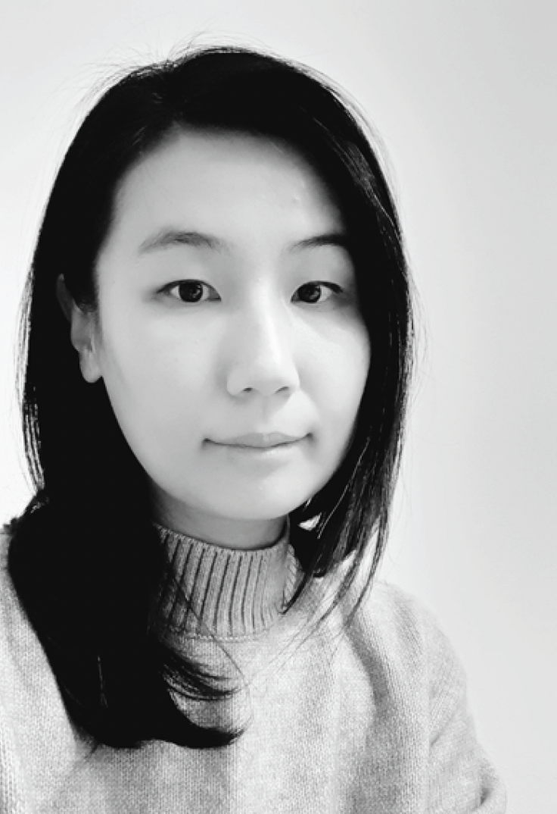

Mer om mig
Mitt namn är Julia Chae, jag kommer från Sydkorea och har bosatt i Sverige ca 6 år. |

|
Utbildning
- UX-designer, Nackademin Yrkeshögskola, Stockholm | 2020 - 2022
- CuratorLab, Konstfack, University of Art, Craft and Design, Stockholm | 2018 - 2019
- Mediedesign, Konstnärlig masterexamen, Sogang University, Seoul, Sydkorea | 2005 - 2007
- Fri konst, Konstnärlig kandidatexamen, Sookmyung Women's University, Seoul, Sydkorea | 2001 - 2005
Arbetslivserfarenhet
- UX-design praktikant, Caspeco AB | 2021.3. - 2021.5.
- Frilansande curator, projektsamordnare | 2018 - nuvarande
- Lärarvikarie, Pedagogpoolen AB | 2019 - 2020
- Intendent (förmedling), National museum of modern and contemporary art, Korea | 2011 - 2013
- Curator, Art center Nabi | 2008 - 2010